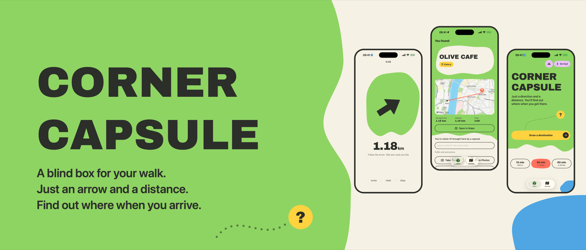

- FreeNo ads, no account, no tracking
- iPhone + Apple WatchiOS 17 and watchOS 10 or later
- 173 countries and regionsEverywhere except mainland China
- 6 languagesEnglish, 简体中文, 繁體中文, 日本語, 한국어, Español
How it works
- Pick 15, 30 or 60 minutes, on foot or by bike, and tap Draw a destination.
- Corner Capsule picks a real place nearby: a park, a café, a bakery, a quiet corner. It stays sealed.
- You get one arrow and one number. No map, no street names. Take any route you like.
- When you arrive, the capsule opens and the place is revealed. Save it to your journal with a photo.
- Leave an anonymous note for the next person a capsule brings there, or invite friends with a 6-character code to walk to the same secret place.
A video idea
“I let an app decide where I go today”
The surprise works on camera because you don't know where you're going either.
- Hook (first 3 seconds): “This app picks a secret place near me. I only get an arrow.”
- The draw: show the screen as you tap Draw a destination.
- The walk: quick cuts of the arrow and the distance counting down, and wherever it leads you.
- The reveal: film the moment the capsule opens. Your honest reaction is the payoff.
Optional: hide something for your followers
When you're nearly there, tap Invite to get a 6-character code. Leave a small note, sticker or postcard at the place and share the code at the end of the video. Anyone who enters it is led to the same secret spot from wherever they are. Codes last 48 hours, so post soon after you film. Don't show street signs or shop names near the spot, or viewers won't need the app.
Please start from a public place rather than home: destinations are within a couple of kilometres of where you draw. Hide things only in public spaces, nothing valuable or edible, and nothing that looks like an unattended bag. Paid partnerships should be labelled #ad or with the platform's paid-partnership tag.
Screenshots
Tap one to open the full size image.


App icon: icon.png · Banner: header.png


Promo video
A one-minute vertical promo (Chinese captions). Feel free to use clips from it. Download the video
Contact
Corner Capsule is made by an independent developer in Christchurch, New Zealand. For collaborations, questions or a TestFlight build:
转角盲盒
给散步开个盲盒：在附近抽一个秘密地点，路上只有一个箭头和一个距离，到了才知道是哪儿。欢迎拍「让 App 决定我今天去哪」，也可以在终点藏点小东西，把 6 位口令发给粉丝去找。
Corner Capsule（日本語）
近くの秘密の場所を引いて、矢印と距離だけを頼りに歩くアプリ。どこなのかは着いてのお楽しみ。「アプリに今日の行き先を決めてもらう」動画、大歓迎です。
Corner Capsule（한국어）
근처의 비밀 장소를 뽑고, 화살표와 거리만 보고 걸어가는 앱이에요. 어디인지는 도착해야 알 수 있어요. 「앱이 오늘 갈 곳을 정해 준다」 영상, 언제든 환영해요.
Corner Capsule（Español）
Una app que elige un lugar secreto cerca de ti y solo te da una flecha y una distancia. Sabrás dónde es cuando llegues. Nos encantan los videos de “dejé que una app decidiera a dónde ir hoy”.